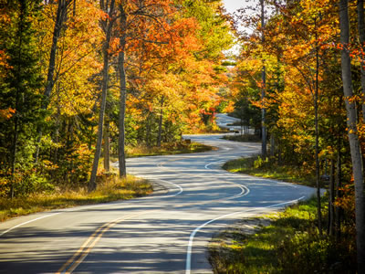

Follow the Winding Road to JavaJam
We’re a little out of the way, but take a drive down Route 42 to JavaJam today!
Indulge in our locally roasted free-trade coffee and home-made pastries. You’ll feel right at home at JavaJam!
JavaJam Coffee House features:
- Specialty Coffee and Tea
- Bagels, Muffins, and Organic Snacks
- Music and Poetry Readings
- Open Mic Night
12312 Main Street
Mountain Home, CA 93923
1-888-555-5555
Mountain Home, CA 93923
1-888-555-5555